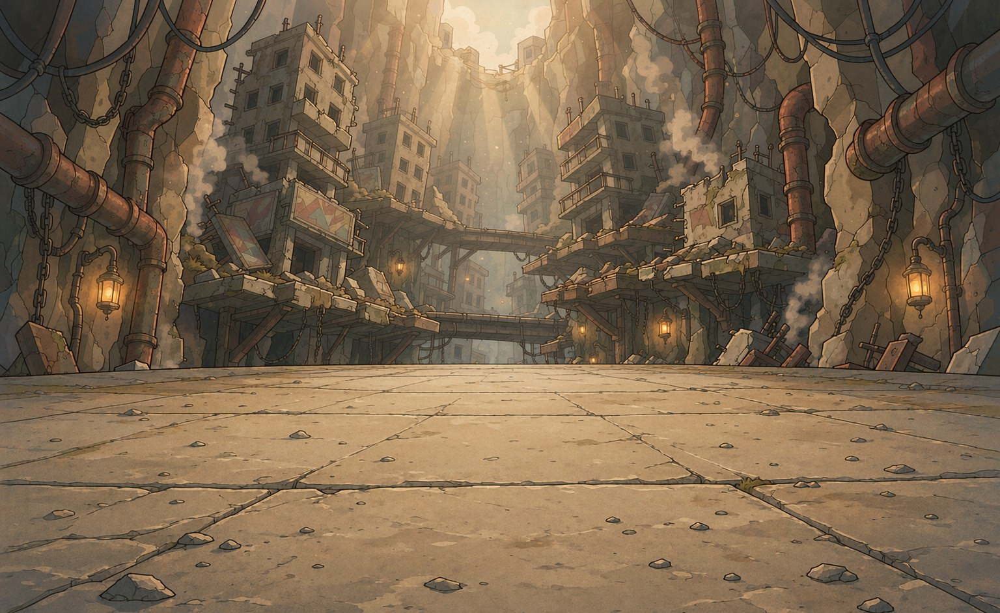
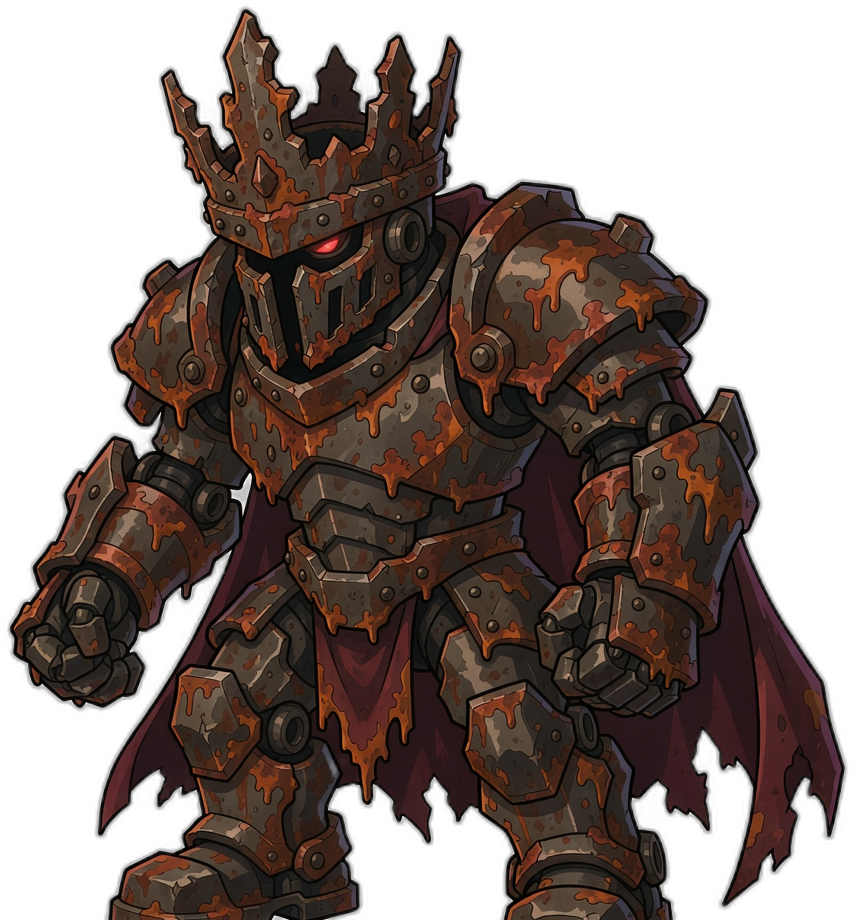

战斗舞台 · 形象整体缩小 + 敌我间距拉大（设计稿）
舞台内宽固定 786px（≈ 1440 实机实测的 790px），四张卡同一场景同一素材，只改尺寸与间距 —— 可直接横向对比。
尚未改动 css/，等你选定档位再落地。
为什么必须连血条一起缩：单位宽度 = max(立绘宽, 血条 min-width)。立绘缩了但血条下限不动，
单位一点也不会变窄，对峙间距就拉不开 —— 视觉上「白缩」。所以每档的血条下限同步收窄，
且收得比立绘宽度上限更窄一点，保证血条不反过来成为最宽的一块。
现状基准
立绘 ×1.00 · 对峙 gap 84px · 血条下限 128

D6 · 精英战
点敌人切换目标
攻击 11

42 / 42
攻击 5

20 / 26

48 / 75
方案 A · 轻微缩 10%
对峙 gap 110px · 改动最小，几乎不改变现有观感
D6 · 精英战
点敌人切换目标
攻击 11
42 / 42
攻击 5
20 / 26
48 / 75
方案 B · 推荐缩 18%
对峙 gap 140px · 中场留白明显，构图最稳，两侧仍各留 200px 余量
D6 · 精英战
点敌人切换目标
攻击 11
42 / 42
攻击 5
20 / 26
48 / 75
方案 C · 大幅（接地修正版）缩 26%
对峙 gap 170px · 落影/ 地面影 / 待机浮动幅度全部按 0.74 同步收窄
D6 · 精英战
点敌人切换目标
攻击 11
42 / 42
攻击 5
20 / 26
48 / 75
最终方案 · C 的缩放 + gap 再 ×1.3 + 数字不溢出待确认
对峙 gap 221（C 的 170 再 ×1.3）· 立绘缩 26% · HP 条 15→14 + 数字 9px 不溢出
D6 · 精英战
点敌人切换目标
攻击 11
42 / 42
攻击 5
20 / 26
48 / 75
数值对照表单位：px
| 项 | 现状 | A 缩10% | B 缩18% | C 缩26% |
|---|---|---|---|---|
| 玩家立绘 | 150 / 136 | 135 / 122 | 123 / 112 | 111 / 101 |
| 小怪 | 99 / 132 | 89 / 119 | 81 / 108 | 73 / 98 |
| 精英 | 123 / 172 | 111 / 155 | 101 / 141 | 91 / 127 |
| Boss | 176 / 224 | 158 / 202 | 144 / 184 | 130 / 166 |
| 血条下限（普通 / 精英 / 玩家 / Boss） | 128 / 128 / 128 / 224 | 106 / 108 / 108 / 190 | 98 / 98 / 100 / 172 | 88 / 88 / 90 / 152 |
| 项 | 现状 | A | B | C |
|---|---|---|---|---|
| 敌我对峙 gap | clamp(34, 5.5vw, 84) | clamp(44, 7vw, 110) | clamp(56, 9vw, 140) | clamp(68, 11vw, 170) |
| 满编 3 敌 gap | 60 | 72 | 84 | 96 |
| 满编 4 敌 gap | 52 | 60 | 68 | 76 |
| 同方内部 gap | 18（满编 12/10） | 22（14/12） | 26（16/14） | 30（18/16） |
| 文件 | 选择器 / 属性 | 现值 | 改为 |
|---|---|---|---|
| css/art.css 立绘基准 |
.unit-art .unit-bm（height / max-width） | 99 / 132 | 73 / 98 |
| .art-kind-elite .unit-bm | 123 / 172 | 91 / 127 | |
| .art-kind-boss .unit-bm | 176 / 224 | 130 / 166 | |
| .unit-art-player .unit-bm | 150 / 136 | 111 / 101 | |
| css/art.css 接地修正 |
.unit-art .unit-bm 的 drop-shadow | 0 8px 6px | 0 5.9px 4.4px |
| .oshadow（bottom / height） | -7px / 9px | -5.2px / 6.7px | |
| @keyframes idle-bob 的 translateY | -6px | -4.4px | |
| @keyframes hit-flash 的 drop-shadow | 0 0 8px | 0 0 6px | |
| css/style.css 血条下限 |
.hprow（min-width） | 128 | 88 |
| .hprow-boss（min-width） | 224 | 152 | |
| #enemy-panel[data-alive="4"] .hprow | 104 | 76 | |
| #enemy-panel[data-alive="4"] .hprow-boss | 104 | 76 | |
| css/style.css HP 条厚度 |
.hpbar（height） | 15px | 14px |
| .hprow-boss .hpbar（height） | 20px | 18px | |
| .hplabel（font-size / line-height） | 10.5px / 1.6（继承） | 9px / 1 | |
| .hplabel 的 text-shadow | 0 1px 2px | 0 1px 1px | |
| css/style.css 对峙间距 |
.battle-stage（gap） | clamp(34px, 5.5vw, 84px) | clamp(88px, 14.3vw, 221px) |
| .battle-stage[data-crowd="3"]（gap） | 60px | 125px | |
| .battle-stage[data-crowd="4"]（gap） | 52px | 99px | |
| css/art.css 同方内部 |
#player-panel, #enemy-panel（gap） data-alive="3" / "4" 的回退 |
18px 12px / 10px | 30px 18px / 16px |
「地线按方案 A」这条已被min-height 吸收。
设计稿原先漏了
HP 数字为什么必然溢出：
min-height，立绘一缩小舞台就跟着塌（218→186px），
背景图是 background-position: center bottom 贴底对齐的，
舞台一矮地平线就在画面里往上飘 —— 那是设计稿的假象，实机 css/style.css:929 本来就有 min-height: 300px。
补上后五档舞台统一 300px、地线统一距底 31px，与方案 A 完全一致，落地时无需额外改动。
实测五档：舞台高全300 / 地线距底全 31 / 脚底到地线全 −16（= 血条高度）。
.hplabel 没写 line-height，继承 body 的 1.6。但真正卡住的是字形本身的自然高：
9px 字在 Segoe UI 下的ascent+descent 就有 12px，line-height 只管行盒、管不了字形。
实测扫描（条高 10–16 × 字号 8–11，共 35 组，带 box-sizing: border-box 与 1px 边框）：
| 条高 | 内容区（扣边框） | 9px 文字高 | 溢出 | 判定 |
|---|---|---|---|---|
| 10px | 8px | 12px | +4 | 溢出 |
| 12px | 10px | 12px | +2 | 溢出 |
| 14px | 12px | 12px | 0 | 刚好 |
| 15px | 13px | 12px | −1 | 宽裕 1px |
若要条高真的到 12px 以下，只能把字号压到 8px（字形 11px，仍需条高 13px）， 8px 字在移动端小屏上已接近可读下限，不建议。
满编 4 敌复核（菌母 + 3 孢囊行者，全局唯一 4 敌场景）：
立绘 98×0.72=71 vs 血条下限 76 → 单位宽 76，4 单位 + 3×16px 内部间距 = 352；
玩家 101；总占 352 + 99(gap) + 101 = 552 / 786，两侧各余 117px。
比现状（667 + 52 + 136 = 855，两侧仅余 −34，已在边缘）宽松得多。
单敌场景：玩家 101 + gap 221 + 敌人 88 = 410 / 786，两侧各余 188px —— 中场留白充足，不贴边。
窄屏两档（≤900 的 .8、≤640 的 .67）走
单敌场景：玩家 101 + gap 221 + 敌人 88 = 410 / 786，两侧各余 188px —— 中场留白充足，不贴边。
窄屏两档（≤900 的 .8、≤640 的 .67）走
--bm-scale 倍率，只改基准值即联动。
| 项 | CSS 原值 | C 档改为 | 为什么 |
|---|---|---|---|
| 立绘落影 | drop-shadow(0 8px 6px) | 0 5.9px 4.4px | 立绘矮 26% 后 8px 阴影相对变粗 34%，脚底像垫了块垫子 |
| 悬浮单位地面影 | bottom -7px / height 9px | bottom -5.2px / height 6.7px | 影子比脚掌宽出一圈，看着悬空 |
| 待机浮动幅度 | translateY(-6px) | translateY(-4.4px) | 摆幅占身高从 3% 涨到 8%，从「呼吸」变「飘」 |
| 受击闪红光晕 | drop-shadow(0 0 8px) | drop-shadow(0 0 6px) | 光晕溢出立绘轮廓边缘 |
脚底线为什么不用改：`.battle-stage` 是
要改的是它周围的固定像素：落影偏移、地面影尺寸、待机摆幅、闪红光晕 —— 这些不跟着缩， 立绘矮下去之后相对变大，就产生了「浮空」的错觉。
align-items: flex-end，立绘在血条上方、
血条高度固定 —— 缩立绘只降头顶，脚底天然钉在地面基准线上。
实测四档的「立绘底到地面基准」距离全是 0px，四档完全一致。
每张卡上都画了红色虚线标尺，可以直接核对脚底是否齐平。
要改的是它周围的固定像素：落影偏移、地面影尺寸、待机摆幅、闪红光晕 —— 这些不跟着缩， 立绘矮下去之后相对变大，就产生了「浮空」的错觉。